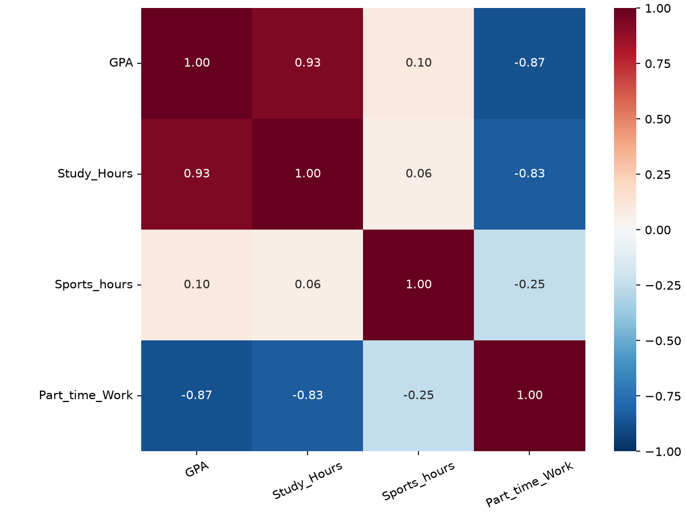

探索: 探索用で選び, 確認用で確かめる
同じデータで選んで検定する手順で見たように, 変数を選んだデータの P 値で関係を確かめると, 残った関係が母集団にもあるのか, 選び方によって残ったのかを区別できません. 変数を選ぶために使うデータと関係を確かめるために使うデータは, 図を作る前に分けます.
GPA と関係しそうな変数をデータから探します. 合成 GPA データの準備を実行したら, 学習用の 70 人を探索用 35 人と確認用 35 人に分けます. 図を作ること, 相関を求めること, 式に入れる候補を選ぶことに使うのは探索用の 35 人です.
explore, confirm = train_test_split(train, test_size=0.5, random_state=0)
print(f"Exploration: {len(explore)}, confirmation: {len(confirm)}")Exploration: 35, confirmation: 35散布図行列と相関
まず散布図行列で, 探索用の 35 人について変数の組み合わせごとの特徴を調べます. 散布図の 1 点は学生 1 人を表します. 散布図行列では行の変数が縦軸, 列の変数が横軸です. 対角線上には各変数のヒストグラムが並びます. 奨学生区分はカテゴリなので, この図には 4 つの数値変数を使います.
numeric_columns = ["GPA", "Study_Hours", "Sports_hours", "Part_time_Work"]
fig, axes = plt.subplots(4, 4, figsize=(10, 9), layout="constrained")
pd.plotting.scatter_matrix(
explore[numeric_columns],
ax=axes,
diagonal="hist",
range_padding=0.12,
color="#23658b",
alpha=0.7,
)
plt.show()
plt.close(fig)
最上段では, 勉強時間が長い学生ほど GPA が高く, アルバイト時間が長い学生ほど GPA が低い傾向があります. 運動時間と GPA の点は, 広い範囲に散らばっています. 合成データには勉強時間が約 -0.48 時間の学生が 1 人います. 配布データの値をそのまま使います.
散布図で見た傾向を数値で比べるために, Pearson の相関係数を求めてヒートマップにします. 負の相関は青, 正の相関は赤に対応します.
correlations = explore[numeric_columns].corr()
fig, ax = plt.subplots(figsize=(8, 6), layout="constrained")
sns.heatmap(
correlations,
ax=ax,
vmin=-1,
vmax=1,
center=0,
cmap="RdBu_r",
annot=True,
fmt=".2f",
square=True,
)
ax.tick_params(axis="x", labelrotation=25)
ax.tick_params(axis="y", labelrotation=0)
plt.show()
plt.close(fig)
GPA との相関係数は, 勉強時間が 0.93, アルバイト時間が -0.87, 運動時間が 0.10 です. 勉強時間とアルバイト時間の組にも -0.83 の相関があります. 重回帰で両方の時間を入れたときは, 他方の時間をそろえた比較になります. 説明変数どうしの関係が強いときは, 多重共線性と係数の精度で見たように, 係数の精度を区間の広さで確かめます.
P 値を使った後退消去
散布図と相関係数で見た GPA との関係の強さは, 時間の種類によって異なります. 変数を外すかは P 値を使った後退消去で決めるため, 3 種類の時間と奨学生区分の 4 変数すべてを候補にし, 探索用の 35 人で切片つきの式を当てはめます. 切片を除いた係数のうち, 最も大きな P 値が 0.05 以上なら, 対応する変数を 1 つ除いて係数を求め直します. すべての P 値が 0.05 未満になるか, 候補をすべて除いた時点で止めます. この手順は ステップワイズ法のうち, 変数を順に除く後退消去です.
selected = ["Scholarship", "Study_Hours", "Part_time_Work", "Sports_hours"]
while selected:
formula = "GPA ~ " + " + ".join(selected)
fit = smf.ols(formula, data=explore).fit()
p_values = fit.pvalues.drop("Intercept")
p_values = p_values.rename({"Scholarship[T.True]": "Scholarship"})
print(p_values.to_string(float_format=lambda value: f"{value:.3g}"))
largest = p_values.idxmax()
if p_values[largest] < 0.05:
break
selected.remove(largest)
print(f"Remove: {largest}")
selected_formula = "GPA ~ " + (" + ".join(selected) if selected else "1")
print(f"Selected formula: {selected_formula}")Scholarship 1.16e-05
Study_Hours 3.13e-09
Part_time_Work 0.00121
Sports_hours 0.715
Remove: Sports_hours
Scholarship 8.49e-06
Study_Hours 6.26e-10
Part_time_Work 0.000765
Selected formula: GPA ~ Scholarship + Study_Hours + Part_time_Work奨学生区分は False が基準なので, Scholarship[T.True] の P 値を奨学生区分の P 値として使います.
drop("Intercept") で切片を除くと, 残った P 値から idxmax() が最大値を持つ変数名を返します.
その P 値が 0.05 以上なら, selected.remove(largest) で該当する変数を外します.
この標本では運動時間の P 値が 0.715 で最も大きく, 運動時間を除いた式で他の 3 変数が残りました.
候補がすべて除かれた場合の式は GPA ~ 1 で, 切片だけが残ります.
探索と確認を分ける理由を述べたとおり, 探索用データで計算した P 値は変数を選ぶために使います.
詳しくは 選んだ後の推論を参照してください.
確認用の 35 人で係数を求める
探索用の 35 人で選んだ式を固定し, 確認用の 35 人ではその式の全係数と 95% 信頼区間を求めます. 確認用のデータは変数の選択に使っていないので, 固定した式について P 値や信頼区間を計算しても, 選んだことの影響を受けません.
探索で選んだ selected_formula をそのまま smf.ols に渡し, 確認用のデータを指定して fit() で係数を求めます.
その当てはめ結果から conf_int(alpha=0.05) で信頼区間を計算します.
check = smf.ols(selected_formula, data=confirm).fit()
intervals = check.conf_int(alpha=0.05)
report = pd.DataFrame(
{
"Estimate": check.params,
"Lower": intervals[0],
"Upper": intervals[1],
"Width": intervals[1] - intervals[0],
},
)
print(report.to_string(float_format=lambda value: f"{value:.3f}")) Estimate Lower Upper Width
Intercept 0.728 0.103 1.354 1.251
Scholarship[T.True] 0.560 0.455 0.666 0.211
Study_Hours 0.226 0.203 0.249 0.046
Part_time_Work -0.096 -0.127 -0.066 0.061奨学生区分とアルバイト時間が同じ学生どうしでは, 勉強時間が週 1 時間長い学生ほど, 平均 GPA が約 0.226 点高いと推定されます. その 95% 信頼区間は 0.203〜0.249 点で, 幅は約 0.046 点です. 奨学生区分についても, 平均 GPA の差には約 0.211 点の区間幅があります.
データを分けたため, 確認に使う係数は 35 人から求めています. 推定に使う人数が減ったとき, 信頼区間の幅はどれだけ変わるでしょうか. 一般に人数が少ないと信頼区間は広くなりやすく, 実際の幅は各標本の説明変数の散らばりや残差にも左右されます. この分割で得た勉強時間の区間幅は, 問いで決めた式を 70 人で推定した区間の幅と同程度です. 探索で選んだ関係は, 独立な確認用の標本から得た区間を添えて記録し, 新しいデータでも確かめる仮説として扱います.
ほかの変数選択の手法や, 選んだ式の係数を推定する際の注意点は, その他のモデル選択の手法と選んだ後の推論で詳しく扱います.